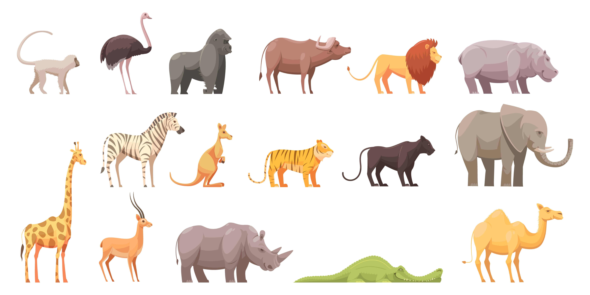
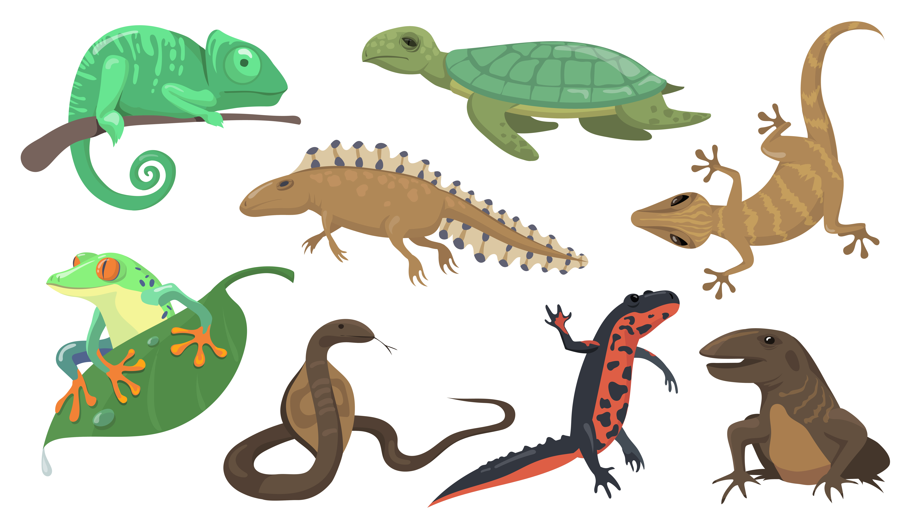

| Gambar | Nama Jenis | Deskripsi |
|---|---|---|
|  | Mamalia | Mamalia adalah kelompok hewan berdarah panas yang memiliki kelenjar susu untuk menyusui anak, tubuh yang umumnya ditutupi rambut atau bulu, dan otak yang berkembang baik untuk perilaku kompleks. Mereka ditemukan di hampir semua habitat di Bumi, termasuk daratan, lautan, dan udara. Mamalia bereproduksi secara seksual dengan mayoritas melahirkan anak, kecuali beberapa spesies seperti platipus yang bertelur. |
 |
burung | Burung adalah hewan bertulang belakang yang ditandai dengan tubuh yang ditutupi bulu, memiliki sayap, paruh tanpa gigi, dan kemampuan bertelur. Mereka ditemukan di hampir semua habitat di dunia, dari pegunungan tinggi hingga lautan terbuka. Sebagian besar burung memiliki kemampuan terbang, meskipun ada juga spesies seperti burung unta dan penguin yang tidak terbang. |
|  | Reptil | Reptil adalah hewan berdarah dingin yang memiliki tubuh bersisik dan bernapas dengan paru-paru. Mereka termasuk kelompok seperti ular, buaya, kadal, dan kura-kura. Sebagian besar reptil berkembang biak dengan bertelur, meskipun beberapa spesies melahirkan anak. Reptil umumnya ditemukan di habitat darat, tetapi beberapa, seperti buaya dan kura-kura laut, juga hidup di air. |
 |
Amfibi | Amfibi adalah hewan bertulang belakang yang dapat hidup di dua habitat, yaitu air dan darat. Mereka bernapas melalui paru-paru, kulit, atau insang pada berbagai tahap kehidupan. Amfibi, seperti katak, salamander, dan caecilian, biasanya bertelur di air, di mana telur mereka menetas menjadi larva sebelum mengalami metamorfosis menjadi bentuk dewasa. |
 |
Ikan | Ikan adalah hewan bertulang belakang yang hidup di air dan bernapas melalui insang. Mereka memiliki tubuh yang umumnya ditutupi sisik, sirip untuk bergerak, dan sebagian besar bertelur untuk berkembang biak. Ikan ditemukan di berbagai habitat air, mulai dari sungai dan danau hingga lautan dalam. |
 |
Serangga | Serangga adalah kelompok hewan invertebrata yang memiliki tubuh bersegmen menjadi tiga bagian utama: kepala, dada, dan perut. Mereka memiliki sepasang antena, tiga pasang kaki, dan sering kali satu atau dua pasang sayap. Serangga ditemukan di hampir semua habitat di Bumi dan mencakup spesies seperti kupu-kupu, lebah, semut, dan belalang. |